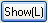
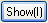

Im mittleren Bedienfeld des Dialogs Diagrammeinstellungen können Diagrammtypen und Datenspalten für die Diagramme ausgewählt werden.
Aus der Liste Diagrammtyp können Sie einen Diagrammtyp für das Diagramm auswählen. Nachdem Sie den Diagrammtyp markiert haben, werden die Spalten rechts daneben entsprechend der Auswahl aktualisiert.
Es gibt zwei Anzeigemodi im mittleren Feld: Benutzerdefinierter Zuordnungsmodus und Standardzuordnungsmodus, die für eine Entscheidung bezüglich der Diagrammzuordnung der aufgelisteten Spalten verwendet werden. Wenn Sie auf die Schaltfläche klicken, können Sie zwischen den Modi hin- und herschalten.
In diesem Modus können Sie die Kontrollkästchen verwenden, bevor die Spaltennamen für jede Spalte auf die Diagrammzuordnung (wie z.B. X, Y, Z, Beschriftung, X Fehler, Y Fehler usw.) gesetzt wurde. Das Diagramm wird entsprechend der festgelegten Zuordnungen anstelle der standardmäßigen Zuordnungen des Arbeitsblatts gezeichnet. Beachten Sie, dass Sie zur gleichen Zeit nur eine Spalte als X setzen können, sobald Sie aber Ihre Auswahl zu einem Zeichnungslayer hinzugefügt haben, kann eine weitere Spalte als X gesetzt werden.
Falls Sie eine Spalte mit einem Abtastintervall als Y setzen (beispielsweise Spalte E in der Liste), wird die Spalte AutoX automatisch als X gesetzt. (Hinweis: Falls Sie das Kontrollkästchen AutoX für eine Y-Spalte aktivieren, die kein Abtastintervall beinhaltet, werden die Zeilennummern als X-Werte zum Zeichnen verwendet.)
Das Kontextmenü erscheint durch einen Rechtsklick auf dieses Bedienfeld.
Zuordnung anwenden
Damit können Sie die standardmäßigen Zuordnungen schnell auf die Spalten anwenden. Wählen Sie die Menüoption Zuordnung anwenden, um die Zuordnungen aus der Quellenarbeitsmappe anzuwenden. Falls Sie Zuordnung automatisch anwenden auswählen, wird dieser Dialog die Diagrammzuordnungen aus der zugrundeliegenden Arbeitsmappe beim nächsten Mal, wenn sie es zum Zeichnen von Diagrammen benutzen, anwenden. Wenn Sie dieses Kontextmenü mit einem Rechtsklick auf die Zuordnungsspalte öffnen, können die Menüpunkte Bis oben Alles Setzen und Bis unten Alles Setzen benutzt werden, um die entsprechende Zuordnung der aktuellen Zeile in die obere bzw. untere Zeile zu setzen. Die Menüpunkte Alles löschen nach oben, Alles löschen nach unten und Alle Zuordnungen löschen werden zum Löschen der Zuordnungen von der aktuellen Zeile bis zur oberen/unteren Zeile bzw. zum Löschen aller Zuordnungen benutzt.
Auto X erlauben
Falls Sie Verwende Zeilen# als auswählen, wird eine Auto X Zeile hinzugefügt. Wenn Ihre Datenmenge ein Abtastintervall besitzt, erscheint die bereits als X gesetzte Auto X Zeile, was bedeutet, dass das Abtastintervall automatisch als X benutzt wird. Andernfalls werden die Zeilennummern automatisch als X gesetzt.
Ignorierte Spalten zeigen
Falls Sie Zeige ignorierte(und verborgene) Spalten auswählen, werden alle Spalten mit der Zuordnung Ignorieren auf der Tabelle angezeigt. Andernfalls können diese Spalten nicht auf dieser Tabelle angezeigt werden.
Spalten vom Typ Fehlerbalken hinzufügen/löschen
Das Kontextmenü kann auch mehr als eine Diagrammzuordnung zeigen. X Fehlerbalken wird benutzt, um eine X-Spalte vom Typ Fehlerbalken hinzuzufügen, und Y Fehlerbalken Plus/Minus wird benutzt, um Y Spalten vom Typ Fehlerbalken + bzw. Fehlerbalken - hinzuzufügen. Danach können Sie die Datenmengen als xEr, yEr+ or yEr- ausweisen, indem Sie die entsprechenden Kontrollkästchen aktivieren.
Alle Infospalten anzeigen
Mit dem Kontextmenü können Sie die Anzeige der Headerspalten wie Abtastintervall, 1. Wert, Parameter, Position usw. in der Spaltentabelle ein-/ ausschalten. Wählen Sie einfach Alle Infospalten anzeigen im Kontextmenü und setzen Sie den anzuzeigenden bzw. zu verbergenden Headertyp.
In diesem Modus können Sie keine benutzerdefinierten Diagrammzuordnungen für jede Spalte festlegen. Origin geht davon aus, dass die Diagrammzuordnungen aus den Arbeitsblattspalten zum Zeichnen verwendet werden. Daher müssen Sie nur die Spaltennamen markieren und sie dann einen Diagrammlayer hinzufügen oder ein bestehendes Diagramm durch sie ersetzen; die dazugehörenden X Spalten werden automatisch zum Zeichnen benutzt.
Die Schaltflächen (,  und ) im mittleren Bedienfeld steuern die Liste der verfügbaren Spalten in der Spaltentabelle entsprechend gemeinsamem Langnamen, Kurznamen oder Index, wenn mehrere Blätter im oberen Bereich ausgewählt sind. Im untenstehenden Tutorial lernen Sie, wie Sie Spalten mit gemeinsamem Langnamen mit Hilfe des Dialogs Diagrammeinstellungen zeichnen können.
Im Screenshot können Sie sehen, dass es mehrere Spalten mit gemeinsamen Langnamen in verschiedenen Arbeitsblättern gibt.
Sie können den untenstehenden Schritten folgen, um diese Spalten gruppiert in einem Layer zu zeichnen:
Das Zeichnen von Spalten mit gemeinsamem Kurznamen ist ähnlich, während das Zeichnen nach Index Spaltennamen und Diagrammspalten ignoriert, die die gleiche Position (Spaltenindex) in allen ausgewählten Blättern teilen.